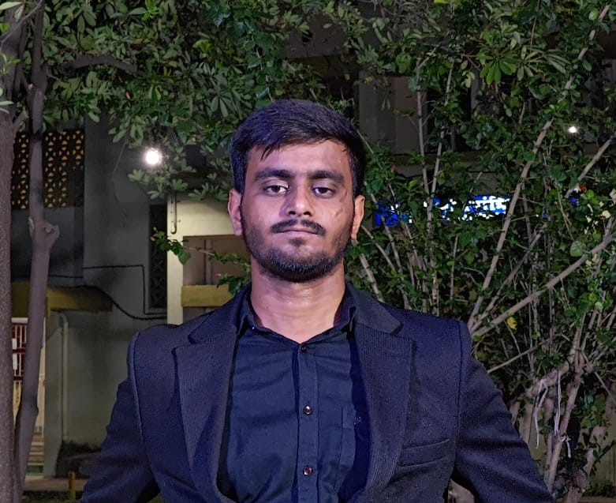

Ankit Kumar Mishra
Linkedin
Objective:
Objective is to show the skill set and strenghts in order to contribute to the firm and to develop something better for the world.
Education:
- B.S.F. Senior Secondary School
- Visvesvaraya National Institute of Technology
B.Tech in Metallurgical and Materials Engineering
GPA: 3.20
Skills
- Languages : C/C++, Java, Python, HTML, CSS, Javascript, Node.js, React.js, R
- Soft Skills :Time Management, Adaptability,Public Speaking, Problem Solving, Leadership, Teamwork, Creativity
- Problem Solving :Data Structures and Algorithms, Object Oriented Programming
Projects
- Defect Detection and Classification System for Flat Steel Products
Took different steel sample images, with defects and trained them in a CNN model, wherein the surface of steel is flat.
- Minimun Number of Transactions
Inspired by the idea of Splitwise App, I worked on an algorithm by using concepts of Data Structures and Algorithms and Object Oriented Programming C++ which minimizes the number of transactions.
Achievements and Awards
- Secured first prize in UBA COVID awareness video making competition wherein I recited a poem and won a prize money worth Rs10,000.
Certificate Link
-
Majorly contributed in the annual institute magazine of VNIT, twice by editing and revising.
Certificate Link
- Performed in various number of street plays organized by Institute's drama club, Hallabol, which raised social awareness amongst masses.
-
Participated in street play competition in MoodI and reached to finals, where around more than 100 teams participated overall.
- Selected for Inter NIT cricket tournament and an active member of cricket club.
- Organized first Literary Festival of VNIT Nagpur.
Position of Responsibility
- Department Representative
Lead the whole department in various arenas and served as the liaison between professors and students.
Organized various events at department level successfully.
- Magazine Editor at Mag.com
Annual magazine editor at literary club of the college Mag.com. We as a team contribute in editing and printing of the annual magazine 'Insight'.
- Treasurer at Lit-Fest '23
Karvaan was the first Literary Festival of VNIT Nagpur, held the position of responsibility of Treasurer of the event.